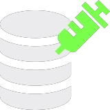

SQL Injection
Practice SQL Injection attacks in multiple lab exercises.
1. Basic SQL Injection
This lab contains a SQL Injection vulnerability in the login function. To complete the lab, bypass the login step by performing a SQL Injection attack. What is the email address of the user named Sky Raincin?
This lab challenge is straightforward. Try entering Sky Raincin' or 1=1 # in the username field and pw' or 1=1 # in the password field. The statement 1=1 is a "tautology" as it is always true. In SQL logic, when you use OR, the entire statement becomes true if either side is true. The # (or -- in some databases) tells the SQL engine to ignore everything after it. This is the "secret sauce" of the bypass.

The login authentication is successfully bypassed. If the code checks the username first (which is standard), the username payload likely did all the work. Here is how the query was transformed: SELECT * FROM users WHERE username = 'Sky Raincin' or 1=1 #' AND password = '...' Because of the #, the database actually executed this: SELECT * FROM users WHERE username = 'Sky Raincin' OR 1=1. Since 1=1 is true, the database returns the first user in the table. If "Sky Raincin" is the first user (or the only one matching that specific string), you're in. Even if the username was wrong, OR 1=1 would return the first account in the database which is often the Admin.

Answer: sraincin0@moonfruit.hv
2. Union-Based SQL Injection
This lab contains a SQL injection vulnerability in the search function. The results from the query are returned in the application's response, so you can use a UNION attack to retrieve data from other tables. To complete the lab, perform a SQL injection UNION attack that retrieves database name. What is the password for the user named "oliverlee" in the database?
There is a search input field for us to try out SQL injection. The overall process is to first determine the number of columns, find the database name, find the table and column names, and finally retrieve oliverlee's password.

We can see that there are four columns visible, so our base payload would likely need four columns. We can test this first with the payload Ford' ORDER BY 1 --. This payload however does not work due to syntax mismatch, which explains why we are getting HTTP 500 errors.

We now test with the payload Ford' ORDER BY 1 -- -. This payload works correctly, allowing us to proceed with the next step of the SQL injection attack.

Testing with the payload Ford' ORDER BY 5 -- - returns an error, indicating that there are only four columns in the query.

We test with the payload Ford' UNION SELECT 'a','b','c','d'-- -. If the table shows a, b, c, d in the rows, then all columns are "string-friendly". Otherwise, if it gives a 500 error, it means one of those columns (likely the # or Year column) expects a number, not a letter.

Since the previous payload works, we now use this payload to get the name of the database: Ford' UNION SELECT 1, database(), 3, 4-- -

Then we use this payload Ford' UNION SELECT 1, table_name, 3, 4 FROM information_schema.tables WHERE table_schema = 'ecliptica_cars'-- - to list all the tables in the ecliptica_cars database.

Now to find the column names of the users table, we use ' UNION SELECT 1, column_name, 3, 4 FROM information_schema.columns WHERE table_name = 'users'-- -.

Since we already have the column names, we can now retrieve the password for the user named "oliverlee" by using ' UNION SELECT 1, username, password, 4 FROM users WHERE username = 'oliverlee'-- -.

Answer: JWa86o4qsUgh
3. Boolean-Based Blind SQL Injection
This lab contains is a SQL Injection vulnerability in the stock control function. Due to the business logic, only "available in stock" or "not available in stock" response is received from the server. To complete the lab, perform a Blind SQL Injection attack using these two possibilities and retrieve the database name. What is the database name?
We see that the website shows a dropdown list of items to select from for checking stock availability.

By intercepting the POST request in Burp Suite, we discover the parameter responsible for checking stock availability.

We then use SQLmap to automate the Blind SQL Injection attack and retrieve the database name. In the Linux terminal, use sqlmap -u [target_URL] --data="search=iphone11" --dbs.


The database name is revealed to be "echo_store".
Answer: echo_store
4. Time-Based Blind SQL Injection
This lab contains a SQL Injection vulnerability in the forgot password function. Unlike other SQL Injection labs, the answer returned from the server is always the same. To complete the lab, perform a Time-Based Blind SQL Injection attack observing the changes in response time and retrieve the database name. What is the database name?
The website shows a reset password form.

We can directly use SQLmap to automate the Time-Based Blind SQL Injection attack and retrieve the database name. In the Linux terminal, use sqlmap -u "[target URL]" --data="email=test@test.com" --method=POST --technique=T --current-db. Note that --technique=T specifies the Time-Based Blind SQL Injection technique.

Answer: utopia
5. Error-Based SQL Injection
This lab contains a SQL injection vulnerability. To complete this lab, perform a Error-Based SQL Injection attack using "img" parameter. What is the database name?
The website shows an image gallery of various places. Notice the img parameter in the URL.


Use SQLmap to automate the Error-Based SQL Injection attack and retrieve the database name. In the Linux terminal, use sqlmap -u "[target URL]" --batch --current-db. After a while, the database name will be revealed.


Answer: heritage_marvels
See you in the next Hacking Lab.
@aaronamran
March 2026